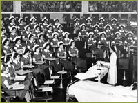
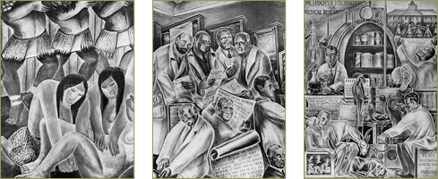

Campus Life in the Great Depression

Throughout the depression, student life flourished in all the schools, despite the fact that the Clinics Building was the only outward sign of progress at Parnassus. An important uniting factor was the school of dentistry’s sponsorship of student facilities, consistently supported by Dean Guy Millberry. In 1925 students and faculty built a dental supply store that soon expanded to include a stock of medical, dental, and pharmacy textbooks and supplies, along with a “complete stock” of dental instruments. Students were given a “liberal discount” on cash purchases and any profits reverted to Associated Dental Students and used for “the general benefit of all the students.” In 1933 and 1934—the midst of the depression—these facilities generated a surplus of $52,000. Eventually these activities would provide impetus for the construction of Millberry Student Union.
Nursing Students in Toland Hall, 1941 (murals in background).
In 1938, artist Bernard Zakheim, a student of Diego Rivera who worked on the Coit Tower murals, painted a series of murals in Toland Hall depicting the history of medicine in California, with financial support from the New Deal's Works Progress Administration.

The straitened economics of the depression overtook the UC Hospital as well as other parts of the Parnassus campus. By the 1930s, the UC Hospital employed a relatively large staff of graduate nurses, in positions funded with the support of University comptroller, Robert Sproul. He became University President in 1930 and almost immediately turned his attention to reorganization of the nursing curriculum. This process would be influenced directly throughout the decade by a succession of innovative nursing faculty. In 1931 Miss Waterman arrived to serve as director of the training school and nursing. She clearly articulated the vision of nursing as a true academic subject matter in 1931, when she urged the curriculum committee to adopt two years of lower division college courses as requirement for admission and to award the baccalaureate degree after four years of college work, with the fifth year reserved for postgraduate study leading to a masters degree. This proposal, when accepted marked the end of the three-year diploma track in the UC Training School.
Toland Hall murals. In 1938, artist Bernard Zakheim painted a series of murals in Toland Hall depicting the history of medicine in California.
In 1932, Edith Bryan, assistant professor of public health nursing at Berkeley, set an intellectual milestone for the entire nursing profession. In a remarkably prescient speech delivered at the San Antonio convention of the National League of Nursing Education, she delineated a clear area for nursing research. She urged her fellow nurses to “seek to understand the complexity of her [nurses’] problem as revealed by a study of the social sciences.” She went on to define three realms of research for nurses: pure science, applied science and social science, adding that “no one of these scientific divisions of nursing is complete or free from distortion unless the other two are taken into consideration.” Throughout the 1930s, other forces shaped the transformation of the training school.
In 1933 May Pickering left her position and the head of the training school departed in the same year. In 1934 Margaret Tracy was appointed to the joint position of training school director and superintendent of nurses, and by May was also made director of nursing education at Berkeley. Almost immediately, she proposed the establishment of a full-fledged academic School of Nursing. Support for the proposal came from Lucy Ward Stebbins, the dean of women at Berkeley who recommended the proposal to President Sproul. The proposal was halted in a bureaucratic tangle of committee debate, but by April 10, 1939, Regent’s approval went to the Academic Senate. The School of Nursing was now established.
>> 1940-1958: The Growth of Organized Research and Consolidation of the Parnassus Campus
{% include footer.html %}